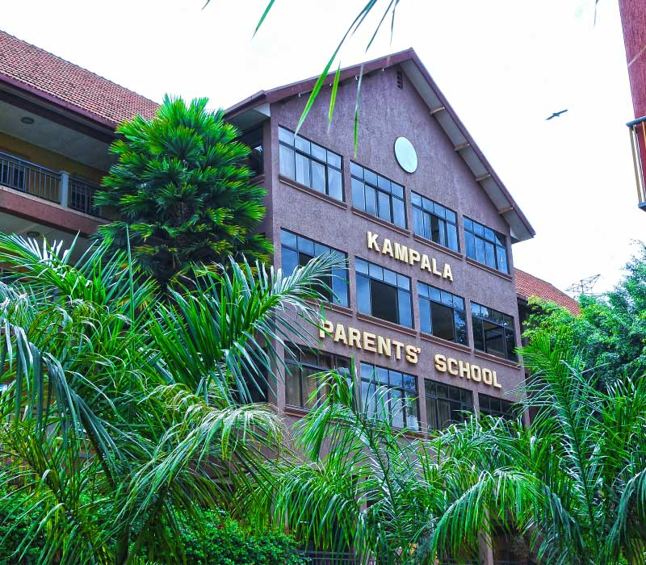

Kampala Parents is a private mixed primary school found in Nakawa division along Lugogo bypass with 118 well trained teachers and 98 non teaching stuff members .It has been and will continue to be an academic hub of Uganda because of the balanced curriculum offered.